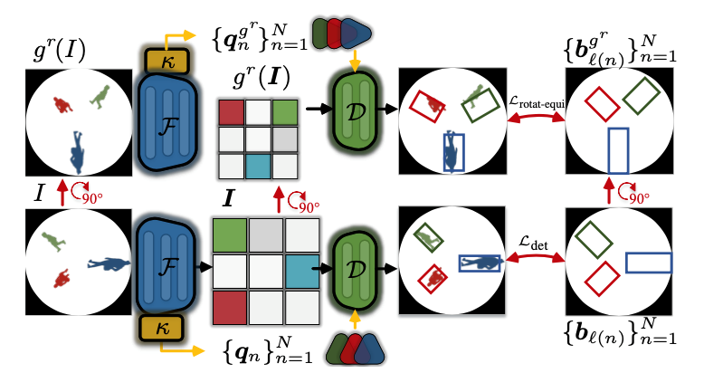

Fisheye cameras from
overhead provide a large field of view 180° and a panoramic 360° viewing angle. The following list
is an incomplete list of our research papers using fisheye camera.
Large-Scale Person Detection and Localization using Overhead Fisheye Cameras
In this paper, we release the LOAF dataset, the first large-scale overhead fisheye dataset for person detection and localization, which consists 42K images with annotation of 448K person detection and localization, we train a perception network based on the transformer to address the detection of radius-aligned rotating boxes, using the rotational equivalence properties of fisheye images.

Top